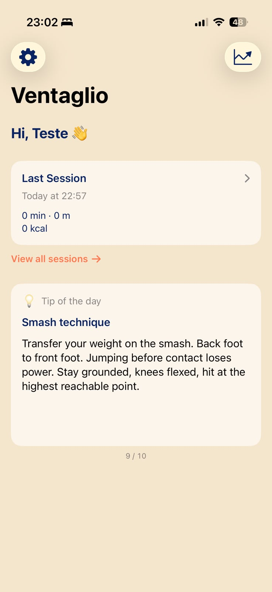
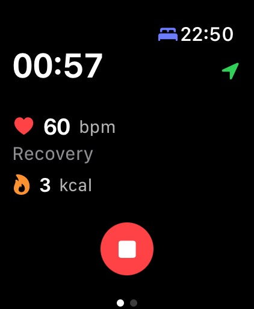

1
Abra no Apple Watch
Com o Ventaglio instalado, abra o app diretamente no Watch antes de entrar em quadra.
Beach Tennis · iOS & Apple Watch
Métricas de performance em tempo real direto no seu pulso. Frequência cardíaca, calorias, distância — tudo sincronizado com o HealthKit após cada partida.

ao vivo, no pulso

depois, o histórico no iPhone
Como funciona
Com o Ventaglio instalado, abra o app diretamente no Watch antes de entrar em quadra.
Toque em Iniciar. O app começa a capturar frequência cardíaca, calorias e distância instantaneamente.
Ao encerrar, todos os dados são sincronizados com o iPhone e salvos no HealthKit automaticamente.
Funcionalidades
Cada métrica foi pensada especificamente para o beach tennis — capturada com precisão e entregue em tempo real no seu pulso.
Monitoramento contínuo via HealthKit. Acompanhe sua zona de treino em tempo real e a recuperação entre pontos.
Cálculo preciso de gasto calórico baseado nos seus dados do HealthKit, atualizado a cada segundo de partida.
Saiba exatamente quantos metros você percorre por jogo. Dados filtrados por velocidade para máxima precisão em quadra.
Coleta dedicada de passos otimizada para a dinâmica única do beach tennis, sincronizada ao HealthKit.
Tempo total de jogo rastreado automaticamente. Cada sessão salva localmente no dispositivo via SwiftData.
Todas as suas sessões organizadas no iPhone. Acompanhe sua evolução ao longo do tempo com dados persistentes.
Screenshots
Interface limpa, dados no centro. Tudo que você precisa saber sobre sua partida em um olhar.
Visão geral da sua última sessão com todas as métricas em um só lugar. Acompanhe sua evolução ao longo do tempo.
Dados Inteligentes
O Ventaglio captura e organiza suas métricas em cada partida — do aquecimento ao último ponto. Tudo integrado nativamente ao HealthKit, sem configuração extra.
Começar agoraApple Watch
Interface nativa para Apple Watch com watchOS 10. Inicie, pause e encerre sua sessão sem tirar os olhos da quadra.
Interface nativa otimizada para a tela do Apple Watch com todas as complicações disponíveis.
Dados transferidos automaticamente para o iPhone via WatchConnectivity ao aproximar os dispositivos.
Sessões salvas no Watch mesmo sem conexão. Tudo sincronizado quando o iPhone estiver disponível.
Cada sessão é registrada automaticamente no app Saúde do iPhone sem nenhuma ação extra.
Perguntas frequentes
Não encontrou o que procurava? Nossa equipe responde em até 2 dias úteis.
support@ventaglio.appSobre o app
O Ventaglio é um aplicativo independente desenvolvido por uma única pessoa que joga beach tennis. O objetivo é ajudar jogadores de todos os níveis a acompanharem seu desempenho com ferramentas simples, confiáveis e que respeitam sua privacidade.
Disponível agora
Gratuito para iPhone e Apple Watch. Comece sua primeira sessão em minutos.
Disponível naApp Store